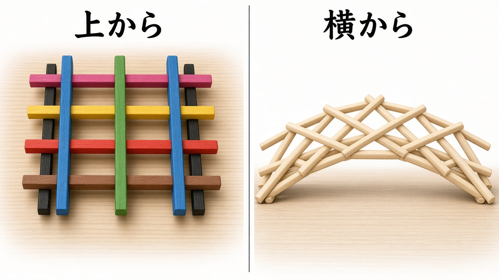
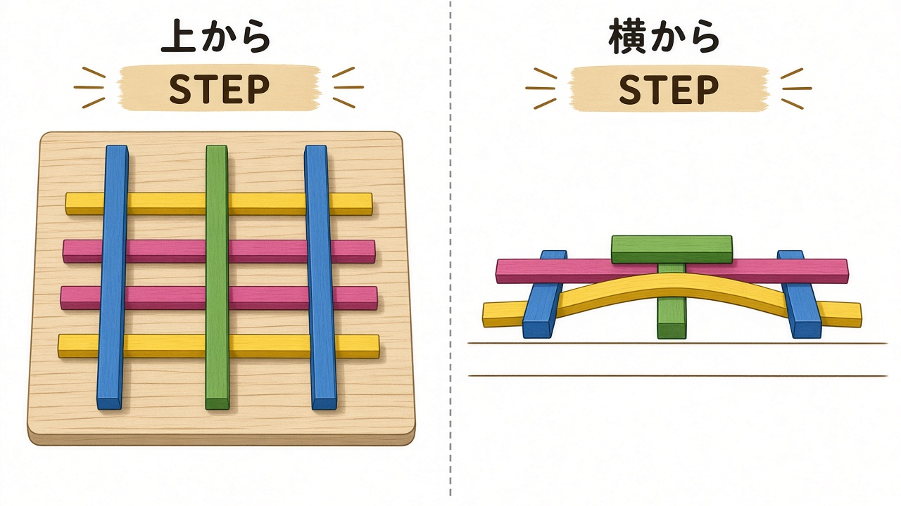
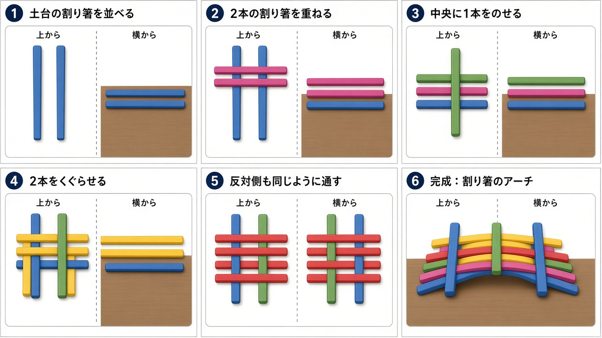

1 1段目：青い脚を2本、平行に置く
自分から見て縦方向に、少し間隔をあけて2本置きます。これが橋の幅になります。
のり・くぎ・ひもは使いません。割り箸を組むだけで、摩擦と重さで自立する橋になります。各手順に上からと横からの図をつけています。
色は説明用です。実物は全部同じ色で大丈夫です。色分けすると「どれが上でどれが下か」が分かりやすくなります。
青＝1段目の脚 紫＝2段目の横棒 緑＝中央の脚 黄＝くぐらせる横棒 赤＝反対側の横棒 黒＝伸ばす脚 桃／茶＝くり返しの横棒
上から見ると格子、横から見るとアーチになります。

机の上で組み立てます。途中から橋が少し浮き上がります。崩れるときは両手で平らに押さえたまま、次の棒を斜めから差し込んでください。
自分から見て縦方向に、少し間隔をあけて2本置きます。これが橋の幅になります。
青い2本に直角に交差させて、井げた（#）の形にします。
紫の横棒の真ん中あたりに、青と同じ向きで1本置きます。
青い脚を少し持ち上げ、黄色い棒を緑の上・青の下に左右1本ずつ差し込みます。これで橋が浮き始めます。

右側の青い脚も持ち上げ、赤い横棒を2本差し込みます。これで最小の原理モデルになります。
端の黄・赤の横棒の下に、青と同じ向きの黒い棒を左右1本ずつ差し込みます。
黒い脚を持ち上げ、桃色の横棒を青の上・黒の下に通します。反対側は茶色で同じことをします。
ゆっくり手を離すと、横から見て中央が高く、両端が机につくアーチになります。上から少し押すと、かえって締まって強くなります。

棒同士が押し合い、接触面の摩擦で滑り落ちません。上に重さをかけるほど締まる構造です。レオナルド・ダ・ヴィンチが軍用の仮設橋として考えた仕組みの、割り箸版です。